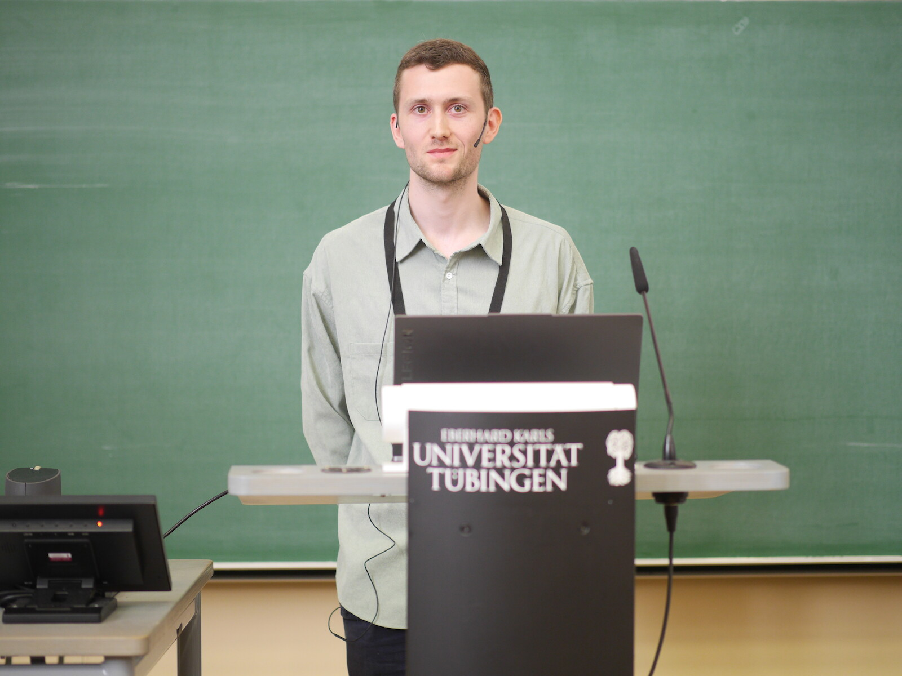

Hamish Flynn
I'm a postdoc in the Artificial Intelligence and Machine Learning Research Group at Universitat Pompeu Fabra in Barcelona. I did my PhD at the Bosch Center for Artificial Intelligence and the Intelligent Autonomous Systems Group at TU Darmstadt.
I mainly work on statistical learning theory and bandits, though I'm also interested in hypothesis testing, online learning and reinforcement learning. My general aims are to: a) understand statistical testing, learning and decision-making problems; b) design algorithms that solve these problems and come with useful and/or optimal performance guarantees.
Contact
Carrer de Roc Boronat 138
08018 Barcelona
Spain
email: hamishedward.flynn@upf.edu
News
Dec 2025 - I will attend NeurIPS or EurIPS (choice of location \( \not\in \mathcal{F}_{21/09/2025} \)).
Sep 2025 - I will attend the European Workshop on Reinforcement Learning in Tübingen.
Jun/Jul 2025 - I will attend the workshop on Game-Theoretic Statistical Inference: Optional Sampling, Universal Inference, and Multiple Testing based on E-Values in Chennai.